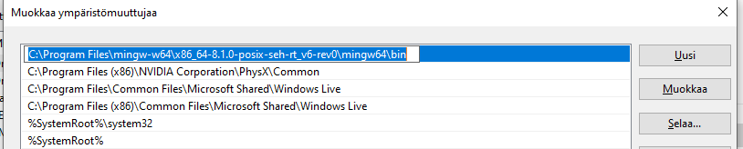

Download the setup program and run it. You can specify installation directory that is by default C:\cmajor. Note: the compiler needs write access to installation directory and its subdirectories, so C:\Program Files\ is not a good place to install. The setup creates an environment variable CMAJOR_ROOT that points to the installation directory and adds the CMAJOR_ROOT\bin directory to PATH. The setup adds a shortcut to the Cmajor Code (IDE) to the desktop.
C:\cmajor\system\platform\windows>cppcmc -st -u -v System.cms
The -u flag tells the compiler to rebuild everything, strictly not necessary.
The -v flag tells the compiler to be verbose, so you will see what's going on.
The -st flag tells to compile sequentally. This is a workaround for a compiler bug.
If everything went fine, the last lines will say:
System libraries installed.
Solution 'System' built successfully.
The debug-mode libraries are installed to the C:\cmajor\system\lib\cpp\gcc\debug directory.
C:\cmajor\system\platform\windows>cppcmc -st -u -v -c=release System.cms
The -c=release option tells the compiler to build for release configuration (optimizations enabled).
Again the last lines should say:
System libraries installed.
Solution 'System' built successfully.
The release-mode libraries are installed to the C:\cmajor\system\lib\cpp\gcc\release directory.
It's assumed that you have a working Visual Studio version installed.
Exit Visual Studio.
If using Visual Studio 2017, go to C:\cmajor\vs\2017 directory. If using Visual Studio 2019, go to C:\cmajor\vs\2019 directory.
Double click the cmajor.vsix Visual Studio extension, or right-click it and select Open.

VSIX installer opens. Click the Install button:

Installation complete:

Open command prompt to the C:\cmajor\vs\2019 directory for example by typing cmd to the folder line of the Windows Exporer and pressing enter:

Run CreateCmajorCps.
Cmajor project system installation is now complete.
Here's a tour of features of the extension.
Select Tools | Extensions and Updates... menu item in Visual Studio.
Click the Uninstall button of the Cmajor Project Type VSIX item.
Exit Visual Studio and then click the Modify button.

Extension uninstalled:

The Cmajor tools need the following libraries to be installed:
These libraries can be installed by using the package manager of your distro (for example apt-get on Ubuntu) or built and installed from sources.
The Cmajor compiler is now built using clang++ (cmajor/build library requires -std=c++20), so you need to install LLVM and Clang 11.0.0 to compile the compiler.
I have Ubuntu 20.04, so I downloaded the Pre-Built Binaries package. I extracted the package to the ~/llvm-11.0.0 directory and inserted ~/llvm-11.0.0/bin directory to the front of my PATH environment variable. After I ran the following command:
which clang++
It prints
/home/slaakko/llvm-11.0.0/bin/clang++
so it is found from the right place.
Sections 2.2, 2.3 and 2.4 describe alternative ways of installing Cmajor under Linux.
C:\>ubuntu
slaakko@pluto:~$
You may alternatively use a LLVM Pre-built Binaries package so this may not be required.
sudo apt-get install gcc g++ make cmake
# LLVM:
wget https://github.com/llvm/llvm-project/releases/download/llvmorg-11.0.0/llvm-11.0.0.src.tar.xz
tar --extract --xz -f llvm-11.0.0.src.tar.xz
# Clang:
wget https://github.com/llvm/llvm-project/releases/download/llvmorg-11.0.0/clang-11.0.0.src.tar.xz
tar --extract --xz -f clang-11.0.0.src.tar.xz
# move clang-11.0.0.src directory under llvm-11.0.0.src/tools with name 'clang'
mv clang-11.0.0.src llvm-11.0.0.src/tools/clang
cd llvm-11.0.0.src
mkdir build
cd build
cmake -DCMAKE_BUILD_TYPE="Release" -DLLVM_TARGETS_TO_BUILD="X86" -DLLVM_ENABLE_EH=ON -DLLVM_ENABLE_RTTI=ON ..
cmake --build .
sudo cmake --build . --target install
sudo apt-get install zlib1g-dev libbz2-dev libgnutls28-dev libboost-all-dev libtinfo-dev
wget https://sourceforge.net/projects/cmajor/files/3.7.0/cmajor-3.7.0-src.tar.bz2
tar xjf cmajor-3.7.0-src.tar.bz2
export CMAJOR_ROOT=~/cmajor-3.7.0-src/cmajor
export LD_LIBRARY_PATH=/usr/lib:/usr/lib/x86_64-linux-gnu:/usr/local/lib
cd ~/cmajor-3.7.0-src/cmajor
make
sudo make install
make sys
slaakko@pluto:~/cmajor-3.7.0-src$ cd cmajor/projects/examples/Hello
cmc -v Hello.cmp
slaakko@pluto:~/cmajor-3.7.0-src/cmajor/projects/examples/Hello$ bin/debug/Hello
Hello, world!